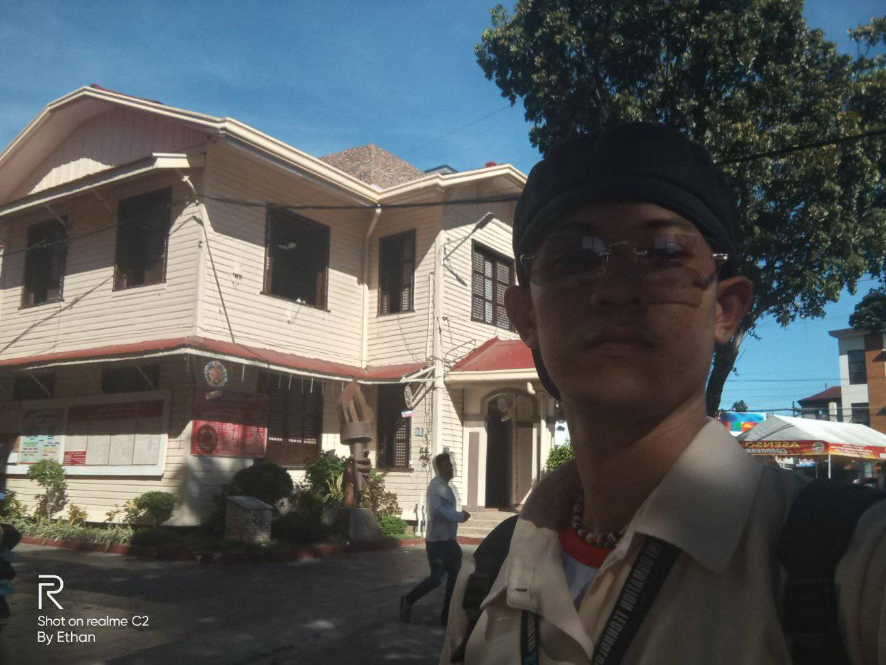
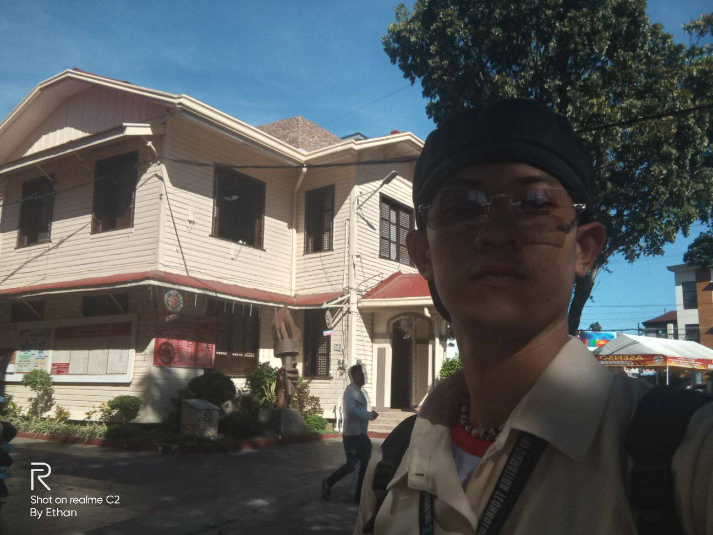

Municipality Of Cordova
One of edifice the stood the test of time in Cordova is the Mucipall Hall. Since the dawn of time it is already there giving space to public servants of Cordova.
 

Several Mayors in the past have used the space as their office. At present that old building is still there standing. There was even a time that it became as one of the classrooms of Cordova Public College. Currently, it is now the museum of cordova as grow grows to one productive municipality that it could no longer hold so much employee to one building. It is just right that it is situated at the middle of the area it is an epitome of history and public service.